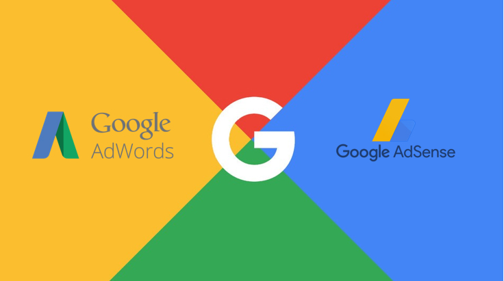

As we have already said, Google officially went public in 1998. 1999 was a very important year for Page and Brin, in fact the company moved to Palo Alto, California in the region we call Silicon Valley. In September 1999 there was another crucial event, in fact google came out of the beta phase and thus began its rise.
The advent of the new millennium brought with it an air of novelty and a desire for expansion. In 2000 Google became accessible to a myriad of more people, 10 new languages were added: French, German, Italian, Swedish, Finnish, Spanish, Portuguese, Dutch, Norwegian, Japanese, Chinese, Korean and Danish.
At the same time, Google invested time and money in developing an advertising system within the search engine. Thus was born Google Adwords (now Google Ads).
AdWords was a web revolution. Google wasn't the first to implement something like this, but it certainly was the first to believe it.
AdWords is structured in this way: up to four ads are displayed above the unpaid search results, or below the search results and are selected by an algorithm that, among many variables, takes into account the keywords searched by the user. By doing so, advertisements relevant to the user's purposes will be shown, thus also improving the investment by the companies that publish through this service.
Subsequently in 2003 Google decided to expand the world of web advertising, thus enabling anyone to sell advertising space on its site. This gave birth to Google AdSense, a banner advertising service offered by Google.
With AdSense you can place advertisements on your website, earning based on the number of ad exposures (impressions) or clicks on the ads. The advertising contents belong to third parties with respect to the owner of the website (publisher) who hosts them on their pages.
This type of advertising will become the core of the company's earnings with Google AdsWords.
After 5 years from its foundation, Google became a publicly traded company on August 19, 2004. Also on this occasion Google managed to stand out and do something new.
Thanks to the agreement with Credit Suisse and Morgan Stanley, an online auction system was developed in which the shares were then sold. After this important event the company grew exponentially and began to become the giant we know today.
In the same year google decided to join the field of mail services. Gmail, which soon became one of the dominant platforms of its kind, was announced on April 1, 2004, and no one wanted to believe it thinking it was an April Fool Prank.
The free service came out of public beta a full 5 years later in July 2009.
Upon release, the platform included an integrated search bar that allowed you to search for emails or contacts, a new and intuitive interface and the ability to save up to a gigabyte of space. These innovations were considered revolutionary at the time and are now obviously the standard.
However, Google has not forgotten its search engine and in fact has continued to improve it by adding features such as autocomplete suggestions. An incredible improvement that increased the speed with which users could do a search. In fact, this type of function, then introduced almost everywhere, suggests searches based on the user's history and the most searches carried out by other users, quickly showing all of the user's possibilities.
Since 2005 the company's approach has changed trying to develop new interesting applications and acquiring small companies with potential. In fact, in this year Google acquired Android Inc and hired its creators Andy Rubin, Chris White and Rich Miner. Then the same year google started the development of Google Maps.
On February 8, 2005, the map service was announced on the Google Blog, available for Internet Explorer and Mozilla Firefox browsers.
Gogle Maps is a geographic internet service that allows you to search and view maps of a large part of the Earth. Accessible from website, or from mobile app (nowadays but not at launch).
In addition to this you can search for services in particular places, including restaurants, monuments and shops. You can also look for a possible road route between two points that can be displayed. As well as satellite photos of many areas with different degrees of detail (for the areas that have been covered by the service, in many cases it is possible to distinguish houses, gardens, roads and etc).
In 2005 Youtube was born, which soon became a quality standard. Google tried to compete with Youtube by launching its "Google Video" platform.
YouTube's popularity was on the rise and continuing to support Google Video would have been a waste of time. Google therefore decided to make it short and bought Youtube for 1.65 billion dollars in 2006. Today, Youtube is one of the most influential free streaming platforms. Google has introduced an AdSense-based advertising system, thus allowing creators to earn money with their videos.
One of the most important applications published by Google is without doubt Google Chrome Web Browser.
At first, Google CEO Eric Schmidt opposed the development of an independent web browser for six years. He stated that "at the time, Google was a small company", and he did not want to go through "bruising browser wars". After co-founders Sergey Brin and Larry Page hired several Mozilla Firefox developers and built a demonstration of Chrome, Schmidt said that "It was so good that it essentially forced me to change my mind."
The Chrome Web Browser was first released in 2008 for Microsoft Windows, and was later ported to Linux, macOS, iOS, and (spoiler) Android where it is the default browser built into the OS. Chrome broke a balance that had existed for years. It soon conquered a large part of the market by converting users of Internet Explorer and Mozilla Firefox.
Google chrome has a minimalist interface, with a few buttons and various settings (subsequently standardized in almost all browsers). One of the most interesting news is the omnibox, a fusion of the url bar with the google search bar, which allows you to use the search engine at any time.
Furthermore, Chrome has a reputation for being the fastest browser.